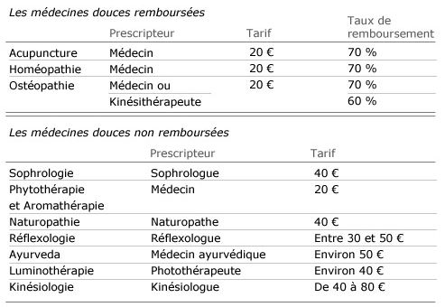
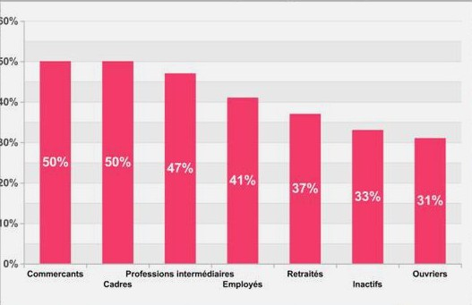

Les médecines non conventionnelles, ou encore médecines douces ont bien d'autres noms que celui-ci, mais qu'est-ce que c'est la médecine non conventionnelle ?
Les Médecines non conventionnelles, ou encore médecines douces sont des Médecines qui diffèrent de la médecine officiellement reconnue et qui emploient d'autres formes de thérapeutiques comme l'acupuncture, l'homéopathie, l'ostéopathie, etc.
La médecine douce considère l’ensemble des symptômes et non chaque symptôme individuellement comme la médecine conventionnelle.
Popularisées vers 1980, ces médecines existent depuis des temps immémoriaux dans certains pays mais n’ont commencé à apparaître en France que récemment. On en connaît plus de 400 à ce jour.
Cependant, seules quelques unes sont reconnues en France, comme l’Homéopathie ou L’Acupuncture que nous avons décidé de vous présenter plus tard.
Ces médecines sont utilisées aujourd’hui par approximativement 40% des Français, autrefois rejetées par le gouvernement pour diverses raisons, elles commencent à se faire une place dans les hôpitaux.
Les raisons de cette expansion sont simples à comprendre.
Les traitements « basiques » pouvant avoir des effets secondaires tels que : Inflammations, fièvre, prise de poids, fatigue, somnolence, difficultés à se concentrer, mal de tête...
La population a choisi de se tourner vers une médecine plus « saine ». De plus, sur le long terme ces médecines reviennent moins chères que les médecines conventionnelles. Les traitements sont aussi plus légers.
De plus, elles traitent un ensemble de symptômes et non un seul.
Par exemple : L’acupuncture est une pratique qui consiste à stimuler des points d’énergie en piquant de fines aiguilles à la surface de la peau. Issue de la médecine traditionnelle chinoise, elle est utilisée notamment pour soulager les douleurs chroniques, lutter contre le stress ou encore les troubles du sommeil.
Les médecines non conventionnelles ont généralement comme base le rééquilibrage des énergies, permettant au corps d’activer ses propres mécanismes de guérison sans passer par le biais de traitements lourds.
Il faut tout de même se méfier ! Certains se servent de l’effet placebo afin de vendre leurs traitements sans aucune réelle compétence. Ces personnes contribuent à l’acceptation retardée de ces médecines.
Il y a différents taux de remboursement selon les médecines et les personnes qui les pratiquent.
En voici un exemple :

On peut aussi voir à l’aide de ces informations suivantes que les différentes catégories socio-professionnelles ont un rapport plus ou moins élevé avec ces médecines :

Les catégories socio-professionnelles ayant les revenus les plus élevés ont plus souvent recours à la médecine douce que les autres